NEOM Case Study
NEOM Case Study
Bringing design consistency to NEOM at scale
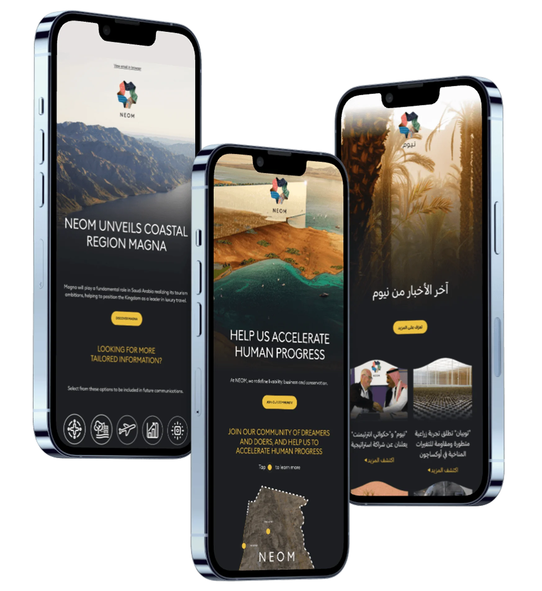
Overview
NEOM's digital campaigns were reaching 200,000 registered users monthly across Arabic and English markets. A single newsletter dispatch alone reached over 62,000 subscribers simultaneously across both languages.
But every campaign was a one off. Approved designs rarely matched what went live. At that scale, inconsistency was not just a production problem. It was a trust problem.
Impact snapshot
The solution
A look at the final designs before we get into how it came together.
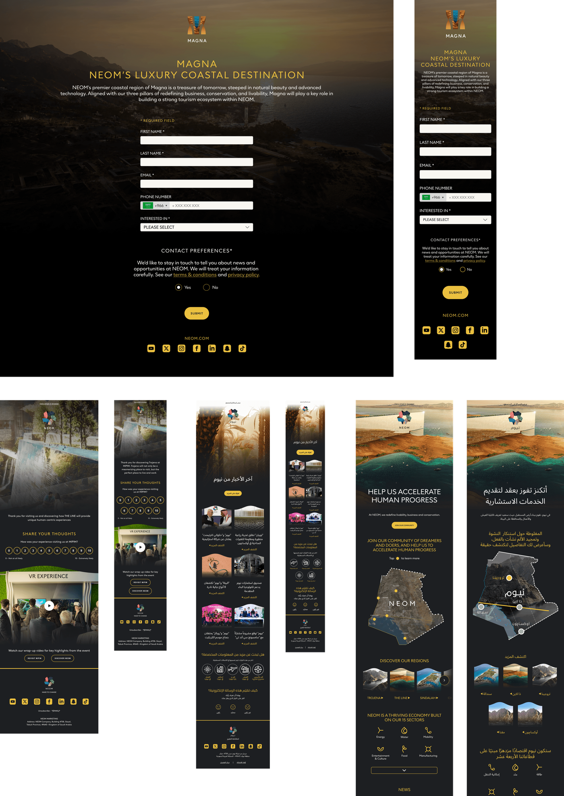
The challenge
Every campaign started from zero. Without a shared design language, developers estimated values rather than reading them. Inconsistencies compounded across every build cycle. Arabic was treated as a translation layer rather than a design problem, which meant RTL layouts were mirrored rather than intentionally rethought. At NEOM's scale, running concurrent campaigns across two language markets without a scalable foundation, this was not sustainable.
Discovery
A system built from vague requirements gets rebuilt within a quarter. A system worth building starts with knowing exactly what needs to be reusable, and that's what the discovery phase was for. Before any system work began, the existing data told part of the story, four distinct audiences, visitors, residents, investors, and tenants, each reading campaigns differently depending on intent.
With the journey aligned internally and with NEOM, mapping wireframes against that data was the next step, but it took direct sessions with subscribers, internal teams, and NEOM's points of contact, run in several rounds, before templates were locked. Once each template held up across those sessions, the work moved to look and feel, a harder problem than it sounds for a brand that needed to read as genuinely premium at global scale. With templates locked and direction approved, the actual system architecture could begin, built on validated decisions rather than assumptions.
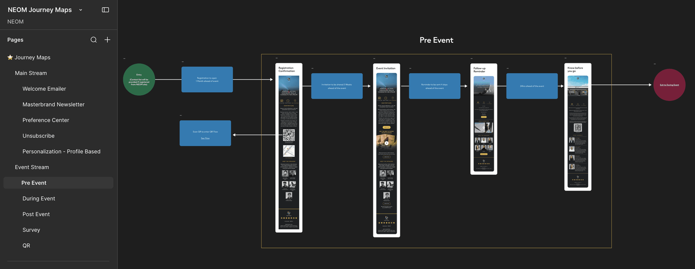
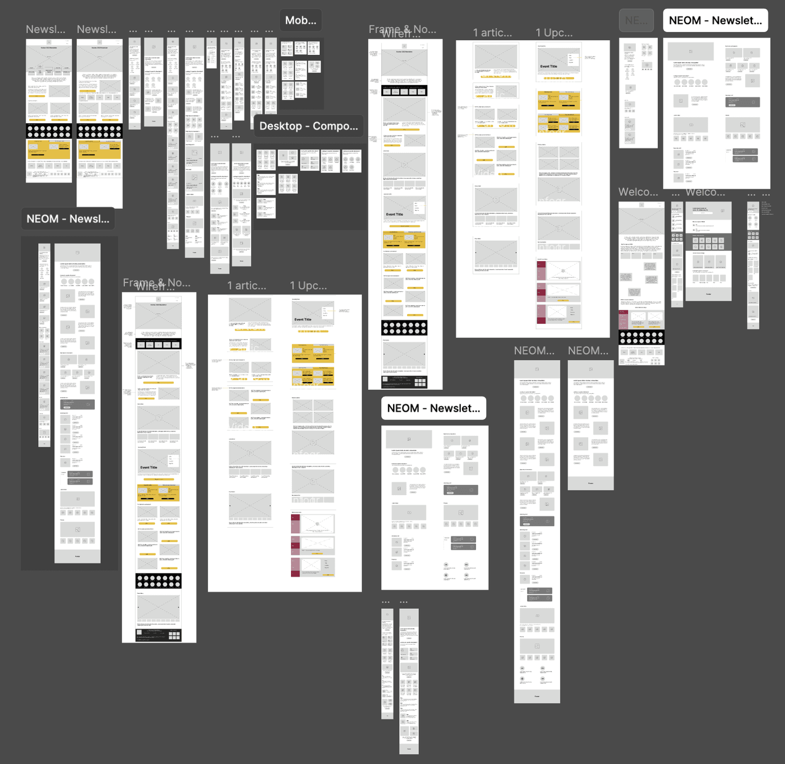
Every campaign started from zero, and at NEOM's scale, inconsistency was a trust problem, not just a production one.
Key decisions
Concepts before components
Building a system before creative direction was approved would have meant investing engineering time into structure nobody had agreed on yet. Locking direction first, then building the system around it, protected against the real cost here: rework compounding across every revision cycle once stakeholders started disagreeing with an already-built system.
Iterative over complete
A complete library delivered upfront was months of investment before any campaign benefited from it, and it risked containing components nobody ended up needing. Building iteratively meant every piece added was already proven to be used, turning this into a lower risk, faster payback decision rather than a single large bet.
Figma Dev Mode as the communication bridge
Every inconsistency between what was approved and what shipped was quietly costing rebuild time and eroding trust between design and engineering. That wasn't a tooling gap, it was an accountability gap with no shared source of truth. Figma Dev Mode closed it, removing the recurring cost of developers guessing instead of reading.
RTL as a design problem
Arabic wasn't a formatting problem, it was 100,000 plus monthly users being served an afterthought. Designing RTL in from the start, rather than retrofitting it later, was a call to treat that audience as a first class requirement rather than a cost saved by deferring it.
Built for every surface and language
Shipping English desktop first and adapting later would have meant every other variant was permanently a step behind and under tested. Requiring desktop, mobile, Arabic, and English as one scope from day one meant the system covered the actual business, not just the easiest slice of it, from the start.
Atomic design approach
Components were built across four levels, atoms, molecules, organisms, and templates, each layer composing from the one below it. Nothing was built in isolation. A button defined at atom level informed every form, card, and campaign template above it. This meant a single token update could propagate correctly across the entire system without manual intervention at every level.
One unified framework
EDMs and Cloud Pages have different layout constraints, rendering environments, and interaction patterns. Building them into a single library would have forced compromises that served neither surface well. Two separate libraries, each optimised for its context.
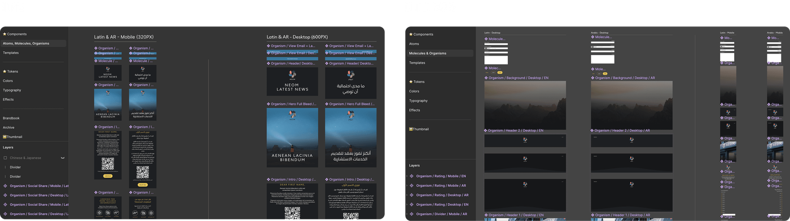
Design documentation
Every token, component, and pattern was documented with usage guidelines and exact specifications. Latin and Arabic typography scales were documented separately, with Arabic hierarchies defined for RTL reading patterns rather than derived from Latin scales. Developers had a reference that removed ambiguity from every build decision.
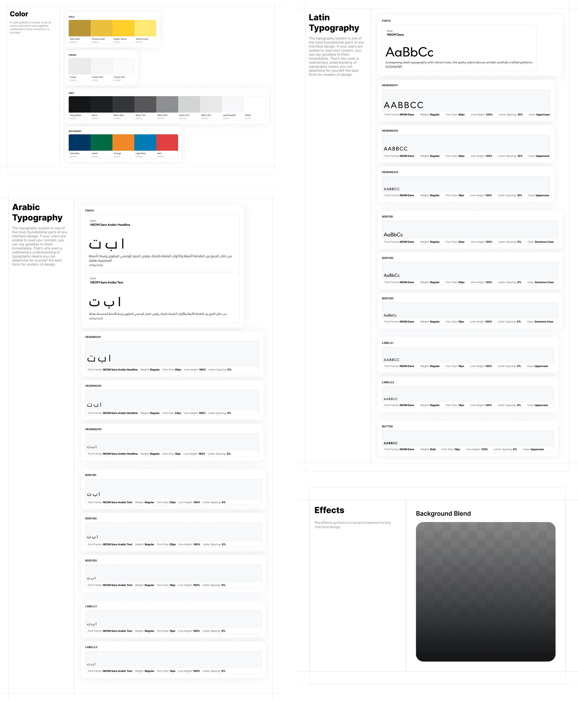
Component structure
Components were built across four levels, atoms, molecules, organisms, and templates, each layer composing from the one below it. Nothing was built in isolation. A button defined at atom level informed every form, card, and campaign template above it. This meant a single token update could propagate correctly across the entire system without manual intervention at every level.
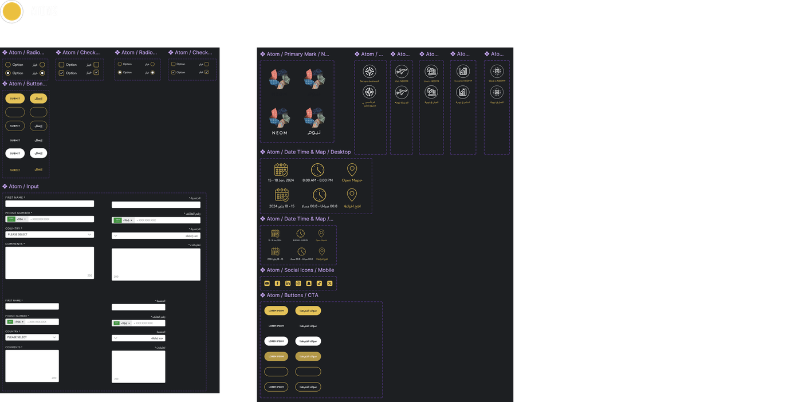
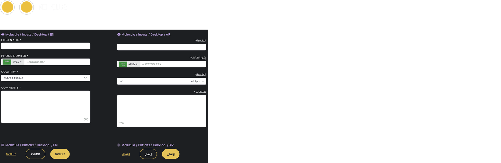
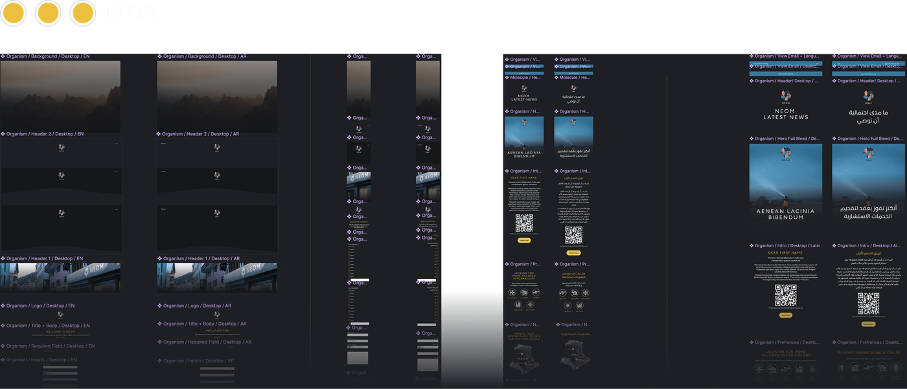
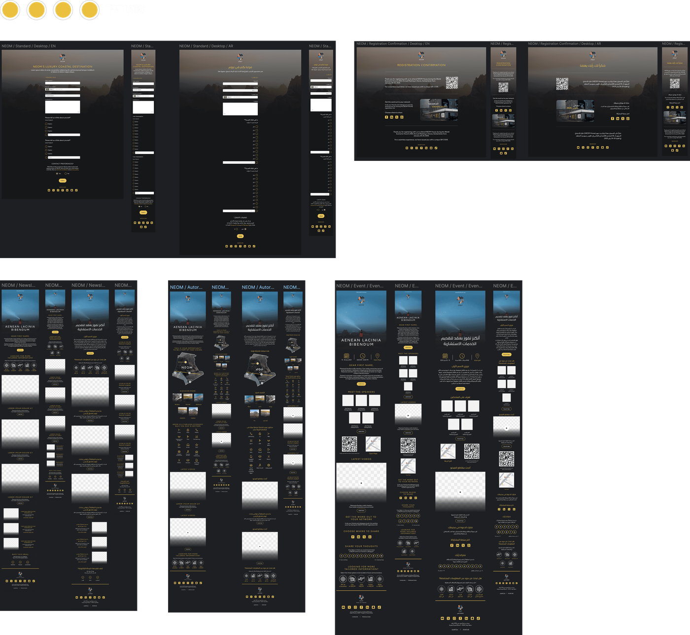
Built for every use case
NEOM's campaigns span multiple formats, hero announcements, event promotions, product launches, and community updates. A rigid component set would have broken under that variety. Every component was built with configurable properties, allowing teams to adapt layouts, toggle content sections, and switch between language directions without rebuilding from scratch. Flexibility was not a nice to have. At NEOM's campaign velocity it was a requirement.
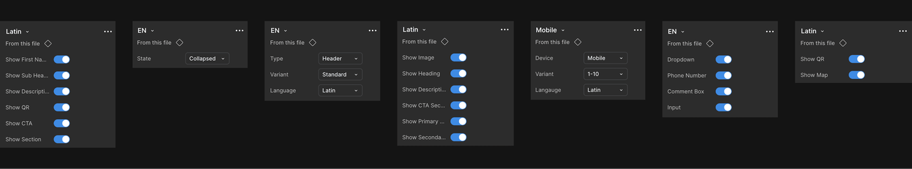
Validation
Every template and look-and-feel direction went through multiple rounds of testing, sessions with NEOM's team and with users themselves, not just internal sign-off. That iteration continued until templates held up in practice, and once locked, the system began rolling out across every live campaign, the same system carried from discovery through to production. The 25 percent faster rollout and 40 percent fewer QA cycles are figures measured six months after full adoption, not projected at launch.
Impact
Dev QA cycles dropped 40 percent and campaign rollout sped up 25 percent, measured six months after full adoption across every live campaign.
The system carried from discovery through to production without drifting. Consistency held because design and engineering finally shared the same source of truth.
Key learnings
The most persistent design problems are usually communication problems in disguise.
Bilingual design cannot be retrofitted. Building it in from the start is less work across the project's lifetime.
A system is only as valuable as the engineering relationship behind it. Adoption follows trust, not completeness.